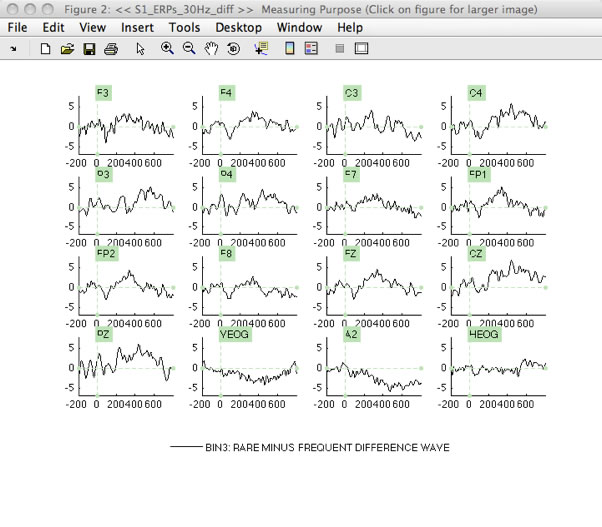
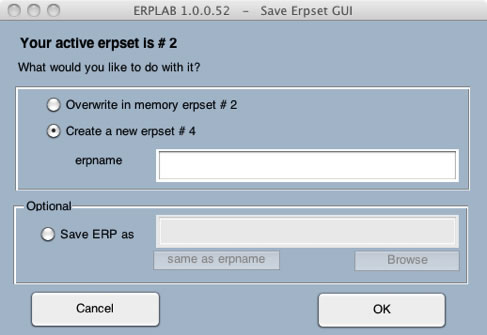

The ERPLAB > ERP Bin Operations routine allows you to create new bins by combining existing bins from the current ERPset. This is most often used to create difference waves or to average across bins.
Bin Operations has two modes of operation. In one mode, you use a set of equations to modify existing bins and add new bins within the current ERPset. In this mode, you can modify one bin and then use this modified bin to create or modify another bin (this is called recursive updating). In another mode, the current ERPset serves as the input to a set of equations that create a new set of bins in a new ERPset (this is called performing a set of independent transformations). We will begin with modifying an existing ERPset, which is the simplest way to simply add a few bins.
As our first example, we will ERPLAB > ERP Operations > ERP Bin Operations to make a difference wave, in which the ERP from the frequent stimuli is subtracted from the ERP from the rare stimuli. We will operate on the data in the ERPset you created earlier called "S1_ERPs_30Hz", so make sure it is selected in the ERPset menu. It's usually a good idea to operate on a duplicate of an ERPset, so first select ERPLAB > Duplicate or rename current ERPset and then make a duplicate of it called "S1_ERPs_30Hz_copy", as shown in the screenshot below.
Equivalent Script Command:
%Load ERP S1_ERPs_30Hz
%Path is /Users/etfoo/Desktop/tutorial_script/
%Note that you will need to replace the path with the actual location in your file system
ERP = pop_loaderp( 'filename','S1_ERPs_30Hz.erp', 'pathname','/Users/etfoo/Desktop/tutorial_script/', 'overwrite', 'off');
%The following command uses Matlab's Current Folder
ERP = pop_loaderp({'S1_ERPs_30Hz.erp' });
%Duplicate S1_ERPs_30Hz to S1_ERPs_30Hz_copy
%Path is /Users/etfoo/Desktop/tutorial_script/
%Note that you will need to replace the path with the actual location in your file system
ERP = pop_savemyerp(ERP, 'erpname', 'S1_ERPs_30Hz_copy.set', 'filename',...
'S1_ERPs_30Hz_copy.erp', 'pathname', '/Users/etfoo/Desktop/tutorial_script/');
%The following command uses Matlab's Current Folder
ERP = pop_savemyerp(ERP, 'erpname', 'S1_ERPs_30Hz_copy.set', 'filename',...
'S1_ERPs_30Hz_copy.set.erp', 'gui','no');
Now select ERPLAB > ERP Operations > ERP Bin Operations. The window shown below will appear.

The right panel lists the existing bins in your ERPset, and the left panel shows a set of equations that you write to create new bins from the existing bins. In the example shown here, an equation is written to create a new bin 3 within the current ERPset that is equal to the existing bin 2 minus the existing bin 1 (the rare-minus-frequent difference wave). A label is also provided for the new bin. You should type this equation into the window, as shown in the screenshot above.
You can create as many new bins as you'd like in one step, defining one bin on each line of the left panel. You can save your bin equations in a text file (by clicking Save list as) and you can read in a previously saved set (by clicking Load list).
Hint: You can see examples of the types of equations that are valid by clicking the Equation examples button. This will create sample equations. These will probably not be directly useful (because ERPLAB doesn't know what would make sense for a given experiment), but they will show you the kinds of things that are possible.
Once you have defined the new bin as shown in the screenshot above, make sure that Modify existing ERPset (recursive updating) is selected so that you will add the new bin to the existing ERPset. Then click RUN to create the new bin. After you've updated the ERPset, you should save it to a file named "S1_ERP_diff" with ERPLAB > Duplicate or rename current ERPset (we will need this file later).
Once you've created the new bin, you can plot it with ERPLAB > Plot ERP Waveforms. If you select only bin 3, the result should look like the screenshot below.

Equivalent Script Command:
%ERP bin operations
% b3=b2-b1 label Rare minus Frequent difference wave
ERP = pop_binoperator( ERP, {'b3= b2-b1 label Rare minus Frequent difference wave' });
%Plotting ERP Waveforms from bin 3 with default parameters
pop_ploterps( ERP, 3, 1:16);
In this example, we've simply added a new bin to the current ERPset. Note, however, that you can also update the existing bins in this mode. In addition, any changes you make in one equation can influence the results of the next equation. For example, after creating the difference wave in bin 3, you could have an equation that uses this difference wave to create a new bin 4.
In this example, we will use ERPLAB > ERP Bin Operations to re-order the bins in the output from the previous step. We will also create an additional bin that shows how to implement a somewhat more complicated transformation. If you select ERPLAB > ERP Operations > ERP Bin Operations after performing the previous step, you will see that the newly created bin (bin 3) is now listed in the right panel as an existing bin (see screenshot below). We are going to create a new ERPset in this example, so select Create new ERPset (independent transformations). The equations in the left panel of the window will create a new ERPset in which the first 3 bins are re-ordered versions of the bins in the current ERPset and the 4th bin is the vector distance between the first two bins:
nb1 = b3 label Rare minus Frequent difference wave — This means that new bin 1 (nb1) in the new ERPset will be equal to the original bin 3 (b3) in the current ERPset)
nb2 = b1 label Frequent — This means that new bin 2 (nb1) in the new ERPset will be equal to the original bin 1 (b1) in the current ERPset)
nb3 = b2 label Rare — This means that new bin 1 (nb1) in the new ERPset will be equal to the original bin 2 (b2) in the current ERPset)
nb4 = sqrt((b1*b1) + (b2*b2)) label Vector length — This means that new bin 4 (nb4) is the Pythagorean distance between the original bins 1 and 2 (rare and frequent)

After you complete your equation list, you can choose to save it by clicking Save list as. You will prompted to save your ERPset. You can save this name as "S1_ERP_bo.txt" and just click OK.
Note that you can also recombine bins with different subsets of channels (e.g., to make contra-minus-ipsi difference waves to isolate the lateralized readiness potential or the N2pc wave). See the section on Bin Operations in the ERPLAB User's Manual for details. This can be done only in the independent transformations mode.
When you use the independent transformations mode, the Bin Operations necessarily creates a new ERPset. You will therefore see the window shown in the screenshot below after you run Bin Operations in this mode. This allows you to name the new ERPset and, optionally, save it as a file on your hard drive. You should name it S1_ERP_diff2 and save it to the disk.

Hint: There is no reason to first make a duplicate of the ERPset in this mode, because it always creates a new ERPset. In the recursive updating mode, however, creating a duplicate is useful (although not necessary) so that you can easily step backward and try again if you make a mistake or change your mind.
Equivalent Script Command:
%Creating new bins
ERP = pop_binoperator( ERP, {'nb1=b3 label Rare minus Frequent difference wave' 'nb2=b1 label Frequent' 'nb3=b2 label Rare' 'nb4=sqrt((b1*b1)+(b2*b2)) label Vector length'});
| <<Filtering | Table of Contents | Channel Operations>> |